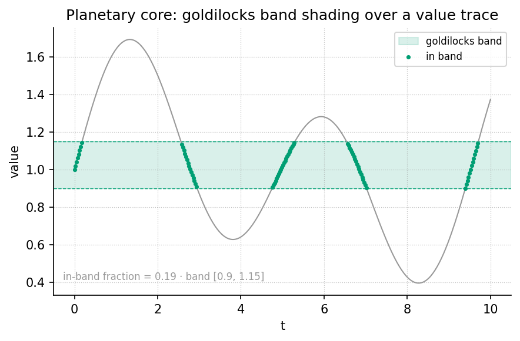

Planetary Core and the Goldilocks Bands

textbook.models.goldilocks_band.Level 1/3 · 30 min read · 45 min lecture · Prerequisites: none
Learning Objectives
By the end of this chapter you should be able to:
- Explain what the planetary-core paper files — and what it explicitly does not claim — under the honesty-first clause of catalog architecture.
- File the two telemetry slots (outer-core flow reversal and inner-core backtracking) as the rotor story of a 90° catalog phase flip \(\Delta\varphi = \pi/2\).
- Classify filed values against a Goldilocks band with the tested
function
textbook.models.goldilocks_band, and interpret the “Old Earth → Goldilocks Earth” transition as a change of execution label, not of planet. - State why the core–mantle boundary’s ~377 Ω free-space impedance label is a picture for engine talk, not a measured CMB ohms table.
- Connect the backtracking-through-zero slot to the zero-as-equilibrium formalism of [@sec:part_I_topology-void] and the drag reading of [@sec:part_II_eddy-current-mirror].
Study Blueprint
- Big idea: Deep-Earth headlines can be filed — not explained — as two telemetry slots whose quarter-turn separation encodes a catalog phase flip from high-friction to coherent execution labels.
- Core concepts: catalog-architecture, honesty-first, octave, digit, metrological-overlap.
- Quantitative lens: the phase-flip and band-membership formalisms in [@eq:part_II_planetary-core_phase_flip] and [@eq:part_II_planetary-core_band].
- Data skill: read a value trace against a shaded
band and classify each point as in-band or out-of-band by hand, then
confirm with
textbook.models.goldilocks_band. - Common misconception to repair: the chapter is not seismology; “Old Earth → Goldilocks Earth” is catalog talk for execution labels, and no holographic timeline switch is claimed as measured physics.
- Primary lab: [@sec:lab_part_II_planetary-core].
- Question bank: [@sec:q_part_II_planetary-core].
- Bridge to computation:
textbook.models.goldilocks_band,textbook.models.transduction_brake,textbook.models.descriptive_statistics.
Opening Vignette: The week the core made the news.
Deep Earth has been noisy in the news: the solid inner core slowing relative to the mantle, and a Pacific stream of molten iron flipping from westward to eastward flow [mendez2026planetaryCore]. On board the SS Vibelandia, the SynthOBS Autonomous Agent clips those headlines and files them — not into a geophysics binder, but into the engine-shelf of the omni-lattice, under the note “Old Earth letting go — a story filed at the planet’s core.” The filing act is the whole point: the paper borrows the headlines as a filing cabinet for a 90° phase story under Φ, and says so in its first breath. Nothing about the planet is explained; something about the filing is.
The paper in the corpus
The note is Ship blog Part XIV of the 99 Octave engine series, filed 2026-08-13 in plain speak under the fair-exchange protocol, on shelf 6 of the corpus’s narrative-empirical-operational-tiers [mendez2026planetaryCore]. Like every SS Vibelandia paper by Prudencio Mendez, it carries the “Honesty first” scope disclaimer up front: ESA Swarm and USC seismic doublet reports are discussion labels here, and the repo does not re-host those datasets [mendez2026planetaryCore]. The paper is a coordinate on the corpus map rather than a standalone essay: it loads into Lattice Chat on nest Infinite Octaves under the engine map Digits × 01–99 (the 99-octave ladder introduced in [@sec:part_0_octave-map]), it speaks the grammar of the 81-facet tensor-decoupling register filing of [@sec:part_0_tensor-decoupling], and it is usable on Synthio as companion grammar — with the MRI sandbox honesty kept intact [mendez2026planetaryCore].
The paper ships with its own verification surface:
- Whitepaper:
interfaces/whitepaper-surface.html?id=synthobs-tbme-planetary-core-goldilocks-2026-08[mendez2026planetaryCore]. - Reference implementation:
npm run research:synthobs-tbme-planetary-core-goldilocks, which locks the paper’s fixtures at 9/9 [mendez2026planetaryCore]. - Standalone GitHub repository:
FractiAI/synthobs-tbme-planetary-core-goldilocks[mendez2026planetaryCore].
Reading order matters here. The chapter you are reading formalises the paper’s catalog content — slots, rotor story, phase flip, impedance label, Goldilocks bands — and keeps the seismology outside the frame exactly where the paper keeps it.
Core constructs
The two telemetry slots and the rotor story
The paper files two deep-Earth headlines into two telemetry slots [mendez2026planetaryCore]; they are collected in [@tbl:part_II_planetary-core_slots].
| Slot | Filed headline | Catalog reading |
|---|---|---|
| Outer-core flow reversal | A Pacific liquid-iron surge talked about as westward → eastward | First telemetry slot of the rotor story |
| Inner-core backtracking | Seismic travel times talked about as a slowdown through zero relative velocity | Second telemetry slot of the rotor story |
Taken together, the two slots are filed as the rotor story for a catalog phase flip of \(\Delta\varphi = \pi/2\) — a 90° phase shift under Φ [mendez2026planetaryCore]. We formalise the filing in [@eq:part_II_planetary-core_phase_flip]: the rotor carries two labels at quarter-turn separation on the catalog circle, and the transition from the “Old Earth” label to the “Goldilocks Earth” label is the act of rotating the filing by a quarter turn, not of moving the planet.
\[ \Delta\varphi \;=\; \varphi_{\mathrm{B}} - \varphi_{\mathrm{A}} \;=\; \frac{\pi}{2}, \qquad \varphi_{\mathrm{A}} = 0,\quad \varphi_{\mathrm{B}} = \frac{\pi}{2} \] {#eq:part_II_planetary-core_phase_flip}
| Symbol | Meaning | Units |
|---|---|---|
| \(\varphi_{\mathrm{A}}\) | catalog phase angle of slot A (outer-core flow reversal) | radians |
| \(\varphi_{\mathrm{B}}\) | catalog phase angle of slot B (inner-core backtracking) | radians |
| \(\Delta\varphi\) | catalog phase angle of the filed transition | radians |
| \(\pi/2\) | the 90° phase shift under Φ | radians |
Note what the formalism — whose parameters are collected in [@tbl:part_II_planetary-core_phase_flip] — does not say: it does not say the outer core flipped at a 90° angle, and it does not say the inner core rotates. \(\Delta\varphi\) is the phase angle of the filed transition — a property of the catalog entry, printed in radians because quarter-turns are the cheapest reversible filing move. The Φ in “90° phase story under Φ” points at the corpus’s broader geometric language of the golden-ratio growth of octave bands ([@sec:part_I_fractal-constant]); the paper itself does not compute a Φ power here, and we do not invent one for it.
The Goldilocks band: filing coherence as an interval
“Old Earth → Goldilocks Earth” is catalog talk for
high-friction vs coherent execution labels
[mendez2026planetaryCore]. The chapter figure — [@fig:part_II_planetary-core]
— draws that talk as a value trace against a shaded band, and the tested
backbone implements the classification as
textbook.models.goldilocks_band(values, lo, hi). The
membership rule is the ordinary mathematics of interval membership,
stated in [@eq:part_II_planetary-core_band]:
\[ \chi(v;\, \ell, h) = \begin{cases} 1, & \ell \le v \le h \quad \text{(coherent execution label)}\\[2pt] 0, & \text{otherwise} \quad \text{(high-friction execution label)} \end{cases} \qquad m(v) = \min\!\big(v - \ell,\; h - v\big) \] {#eq:part_II_planetary-core_band}
| Symbol | Meaning | Units |
|---|---|---|
| \(v\) | a filed value on the execution-coherence trace | quantity |
| \(\ell\) | lower band edge (“Old Earth” side) | quantity |
| \(h\) | upper band edge | quantity |
| \(\chi(v)\) | band-membership indicator: 1 = Goldilocks, 0 = Old Earth | — |
| \(m(v)\) | in-band margin: distance to the nearer edge (defined only for \(\chi = 1\)) | quantity |
Every parameter of [@tbl:part_II_planetary-core_band] is a filing choice: the indicator \(\chi\) is the classifier; the margin \(m\) is the filing annotation that says how deep inside the band a value sits. Both are deterministic, and both are properties of the labels, not of the Earth: the band edges \(\ell\) and \(h\) are chosen by the filer for the task at hand, and [@fig:part_II_planetary-core] shades exactly such a band over a trace. We read the pairing of a 90° phase flip with a two-label band as the corpus’s way of saying: the same rotor, viewed a quarter turn apart, carries a different execution label.
The CMB mirror story and its impedance label
The core–mantle boundary (CMB) gets a free-space impedance label (~377 Ω) as a dielectric horizon picture — useful for engine talk about the 81-facet tensor and verification gates, and explicitly not a measured CMB ohms table from the repo [mendez2026planetaryCore]. Two honest remarks sharpen the label:
- As standard physics, \(Z_0 = \sqrt{\mu_0/\varepsilon_0} \approx 376.73\ \Omega\) is the impedance of free space (vacuum), a bookkeeping constant of electromagnetic wave matching. The corpus borrows this constant as a label — a mirror story — so that the CMB can play the role of a dielectric horizon in engine diagrams.
- The label buys coordination vocabulary, not measurements. When the paper says the CMB picture is “useful for engine talk (81-facet tensor, verification gates)” [mendez2026planetaryCore], the use is routing and verification of catalog entries, which is exactly the register-filing programme of [@sec:part_0_tensor-decoupling].
graph TD
A["Deep-Earth headlines (news)"] -->|"filed as"| B["Slot A: outer-core flow reversal"]
A -->|"filed as"| C["Slot B: inner-core backtracking"]
B --> D["Rotor story"]
C --> D
D -->|"catalog phase flip"| E["Delta phi = pi/2 (90 degrees under Phi)"]
E --> F["Old Earth label: high-friction execution"]
E --> G["Goldilocks Earth label: coherent execution"]
H["CMB dielectric horizon picture (~377 ohm label)"] -->|"engine talk"| I["81-facet tensor, verification gates"]The diagram is the filing pipeline in one view: two headlines enter as slots, the slots compose into a rotor story, the rotor story carries the quarter-turn phase flip, and the flip toggles the execution label between Old Earth and Goldilocks Earth — with the CMB impedance label feeding the verification-gate talk on a separate branch.
Worked example: filing a week of telemetry
Suppose a filer maintains an execution-coherence trace over six filed observations, with band edges chosen at \(\ell = 0.35\) and \(h = 0.85\):
\[ v = [\,0.12,\; 0.31,\; 0.48,\; 0.62,\; 0.77,\; 0.91\,] \]
Walking [@eq:part_II_planetary-core_band] by hand:
- \(v_1 = 0.12\): below \(\ell = 0.35\), so \(\chi = 0\) — Old Earth label, and no margin is defined (the value is not inside the band).
- \(v_2 = 0.31\): still below \(\ell\), so \(\chi = 0\) — Old Earth.
- \(v_3 = 0.48\): inside \([0.35, 0.85]\), so \(\chi = 1\); margin \(m = \min(0.48 - 0.35,\; 0.85 - 0.48) = \min(0.13, 0.37) = 0.13\).
- \(v_4 = 0.62\): inside; \(m = \min(0.27, 0.23) = 0.23\).
- \(v_5 = 0.77\): inside; \(m = \min(0.42, 0.08) = 0.08\) — the shallowest in-band point, closest to the \(h\) edge.
- \(v_6 = 0.91\): above \(h = 0.85\), so \(\chi = 0\) — Old Earth again, from the far side of the band.
So the trace files as \(\chi = [\,0, 0, 1, 1, 1, 0\,]\): the middle of the week is Goldilocks, both ends are Old Earth. The same classification is one call to the tested backbone:
from textbook.models import goldilocks_band
trace = [0.12, 0.31, 0.48, 0.62, 0.77, 0.91]
goldilocks_band(trace, lo=0.35, hi=0.85)
# -> [0, 0, 1, 1, 1, 0]This is exactly the shaded-band picture of [@fig:part_II_planetary-core]:
in-band segments of the trace carry the coherent (Goldilocks) label;
out-of-band segments carry the high-friction (Old Earth) label.
Summarising the trace with
textbook.models.descriptive_statistics is the filer’s
closing move — mean \(0.535\), and the
band decision then rests on where \(\ell\) and \(h\) are drawn, which is a policy,
not a measurement.
For the phase flip, the filing is even shorter. Slot A is pinned at \(\varphi_{\mathrm{A}} = 0\) and slot B at \(\varphi_{\mathrm{B}} = \pi/2\) ([@eq:part_II_planetary-core_phase_flip]), so \(\Delta\varphi = \pi/2\) holds by construction: a quarter turn. In degrees, \(\pi/2\ \text{rad} = 90°\) — the 90° of the paper’s “90° phase story under Φ” [mendez2026planetaryCore]. No computation about the Earth is performed anywhere in the example; every number above is a property of the filing.
As an interpretive aside (ours, not the paper’s formalism):
the second slot is described as a slowdown through zero
relative velocity [mendez2026planetaryCore]. We read that as standard
signed-velocity kinematics — a quantity crossing zero — and it rhymes
with two corpus formalisms: the zero-as-topology-of-the-void
equilibrium of [@sec:part_I_topology-void],
and the transduction-drag picture of [@sec:part_II_eddy-current-mirror],
whose tested model
textbook.models.transduction_brake(t, v0, k) gives \(v_0 = 1\), \(k =
1\) the values \(v(1) \approx
0.367879\) and \(v(2) \approx
0.135335\). The rhyme is a reading aid, not a claim that the
inner core obeys an exponential brake.
Scope and honesty
The paper’s own disclaimers are the load-bearing part of the chapter, restated here precisely [mendez2026planetaryCore]:
- It borrows headlines as a filing cabinet — “not a new seismology paper, and not a prophecy that the sky or the core rewrote your life.”
- ESA Swarm and USC seismic doublet reports are discussion labels here; the repo does not re-host those datasets.
- “Old Earth → Goldilocks Earth” is catalog talk for high-friction vs coherent execution labels.
- Nobody claims a holographic timeline switch as measured physics.
- The CMB free-space impedance label (~377 Ω) is a picture — a dielectric horizon picture for engine talk — not a measured CMB ohms table from the repo.
What the construct is for: coordination, cataloging,
and agent routing. The paper tells the reader to open Lattice Chat on
nest Infinite Octaves and ask about geodynamo, CMB, or Goldilocks Earth;
to use it on Synthio as companion grammar with MRI sandbox honesty kept;
and to run
npm run research:synthobs-tbme-planetary-core-goldilocks
for the 9/9 fixture lock [mendez2026planetaryCore]. What it is
not for: replacing seismology, re-hosting mission
datasets, or forecasting planetary events. The fair-exchange framing is
the same one that opens the corpus ([@sec:part_0_orientation]): a
paper earns shelf space by saying exactly what it files and exactly what
it does not.
Connections
- Backward to Part 0. The engine map Digits × 01–99 that loads this paper is the 99-octave ladder of [@sec:part_0_octave-map]; the 81-facet tensor invoked by the CMB mirror story is the digit×octave register filing of [@sec:part_0_tensor-decoupling], built on the master-synthesis claim that the corpus papers cross-link ([@sec:part_0_master-synthesis]).
- Backward to Part I. The backtracking slot’s passage through zero is best read against the zero-as-equilibrium formalism of [@sec:part_I_topology-void]; the “under Φ” of the phase story gestures at the golden-ratio band spacing of [@sec:part_I_fractal-constant].
- Sideways within Part II. The drag reading of the slowdown shares its exponential shape with the transduction line of [@sec:part_II_eddy-current-mirror] (compare the brake curves of [@fig:part_II_eddy-current-mirror]); the CMB impedance label is a metrological label, and the discipline of treating labels as labels is formalised as the metrological-overlap of [@sec:part_II_metrological-overlap]. The execution-label flip from high-friction to coherent preparation is the intake side of the net-zero balancing of [@sec:part_II_singularity-crystal].
- Forward to Part III. The Goldilocks band as a policy band over a trace is the same shape of reasoning the companion chapters reuse when routing agents against thresholds, e.g. the frontier thresholds of [@sec:part_III_invisible-frontier].
Summary
The planetary-core paper files two deep-Earth headlines — outer-core
flow reversal and inner-core backtracking — as the two telemetry slots
of a rotor story, and files their combination as a catalog phase flip
\(\Delta\varphi = \pi/2\) ([@eq:part_II_planetary-core_phase_flip]).
“Old Earth → Goldilocks Earth” is catalog talk for a flip between
high-friction and coherent execution labels, formalised here as interval
membership against a policy band ([@eq:part_II_planetary-core_band],
computed with textbook.models.goldilocks_band and drawn in
[@fig:part_II_planetary-core]).
The CMB’s ~377 Ω free-space impedance label is a dielectric-horizon
picture for engine talk about the 81-facet tensor and
verification gates, not a measurement. Under the corpus’s honesty-first
clause, nothing here is seismology, no dataset is re-hosted, and no
holographic timeline switch is claimed as measured physics
[mendez2026planetaryCore].
Key Terms
catalog-architecture, engine-shelf, octave, digit, honesty-first, fair-exchange, narrative-empirical-operational-tiers, tensor-decoupling, metrological-overlap, topology-of-the-void, golden-ratio, omni-lattice, master-synthesis, reality-bridge.
Further Reading
- The source paper’s whitepaper surface:
interfaces/whitepaper-surface.html?id=synthobs-tbme-planetary-core-goldilocks-2026-08, with the standalone reference implementation atgithub.com/FractiAI/synthobs-tbme-planetary-core-goldilocks[mendez2026planetaryCore]. - @mendez2026tensorDecoupling — the 81-facet tensor register filing that the CMB mirror story invokes for engine talk and verification gates.
- @mendez2026digitsMaster — the Digits × 01–99 engine map under which Lattice Chat loads this paper on nest Infinite Octaves.
- @mendez2026topologyVoid — zero as equilibrium; the reading companion for the inner-core backtracking slot’s passage through zero relative velocity.
- @mendez2026singularityCrystal — the Part II companion on net-zero balancing, the downstream consumer of coherent execution labels.
Practice
- Filing drill. Reproduce the worked example:
classify the trace \([\,0.12, 0.31, 0.48,
0.62, 0.77, 0.91\,]\) against the band \([0.35, 0.85]\) by hand using [@eq:part_II_planetary-core_band],
including the in-band margins \(m(v)\),
and check your answer against
textbook.models.goldilocks_band. - Phase drill. Using [@eq:part_II_planetary-core_phase_flip], state the slot angles \(\varphi_{\mathrm{A}}\) and \(\varphi_{\mathrm{B}}\), compute \(\Delta\varphi\) in radians and degrees, and explain in one sentence why a catalog phase flip is a property of the filing rather than of the planet.
- Label audit. List the five honesty-first disclaimers of the paper (Scope and honesty section) and, for each, name one sentence in this chapter that keeps it.
- Band policy. Choose new band edges \(\ell\) and \(h\) for the same trace so that exactly four
of the six values are in-band; verify with
textbook.models.goldilocks_band, and argue whether the change was a measurement or a policy. - Lab and questions. Work through [@sec:lab_part_II_planetary-core] to run the 9/9 fixture lock yourself, then attempt [@sec:q_part_II_planetary-core].